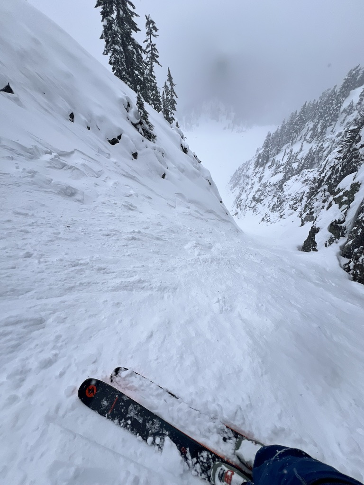
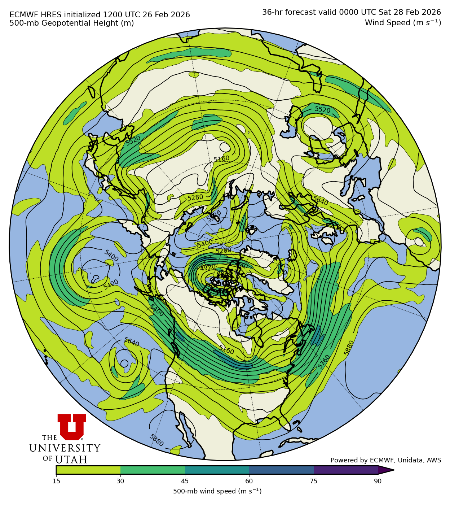
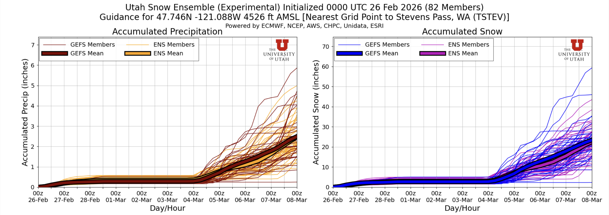
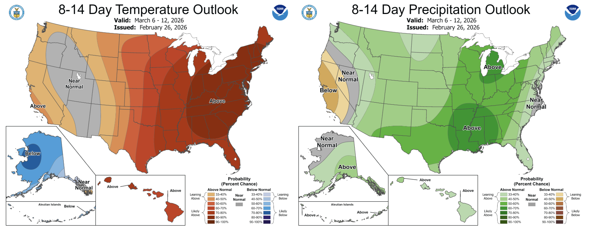

🧟 Back from the dead: Recent storms have revitalized our snowpack!
Welcome to The Dendritic Growth Zone!
Past Week's Recap
Observation Highlight from the Past Week

From the brink of defeat, this winter clawed and fought its way back to glory. We'd been on the edge of our seats for weeks, waiting and praying for frozen water salvation. And our prayers were finally answered. It wasn't the headline-grabbing type of storm like in California or Utah. Instead, the cutoff low stalled off the US West Coast and slowly dripped in a few inches here and there, fueled by glorious cold air aloft. By the past weekend, many mid and upper-elevation locations in the Western Cascades stacked up 18"+ of blower.
With a jet streak located to our north over the past few days, we've had lots of cool clouds rolling through, nephophiles rejoice! There is so much cloud fun to talk about in this satellite loop from GOES-West from Thursday:
- Gravity Waves: Winds hit the mountains perpendicularly and bounce up to start oscillating up and down as they move downstream. You can see these waves all over the state, even well east of the Cascade Mountains.
- Adiabatic compression/warming: As air is forced over and descends on the back side of the Olympic and Vancouver Island Mountains, it warms as the pressure increases. This leads to the perpetual clear skies visible in Sequim and the strange cloud-free line to the east of Vancouver Island.
- Closed-cell Convection: The clouds off the coast of Grays Harbor (SW corner of loop) are formed by roughly hexagonal convective cells. They're bubbling up in the middle of the cells and sinking back down on the edges. You can read more about them here!

🧙♂️ Forecast Discussion
Short-term (Friday-Sunday)
The end of the work week will finish nearly identically to the past 2-3 days. The core of the jet stream is located just over the Canadian border and is absolutely ripping. See the plot here for wind speeds in the upper atmosphere from the ECMWF (European) model. The bulk of the upper-level dynamics conducive to large-scale vertical motions in the atmosphere (read: up = precip (most of the time)) remain well to our north, hence the light to non existant precipitation in Washington. However, we are still tapped into some lingering moisture and cold air aloft. This, combined with orographic lift with this zonal (west to east) flow, may maintain a few isolated showers through Friday in the Skagit and Whatcom County mountains.

Moving into Friday night through the weekend, a ridge of high pressure builds over the region,
easing the winds off significantly and warming temperatures. This sets up right off the bat as a
Rex blocking pattern (high pressure over low) with a cut-off trough spinning off the California
coast. As such, we'll see some high clouds filtering in from the SW, particularly for the
Southern WA Cascades.
Medium-Term (Monday-Wednesday)
Not a whole lot is going on until this ridge finally packs its bags and heads downstream as the
next storm rolls in Tuesday night/Wednesday morning. Once it does, however, we may be in
for a treat. We're starting to get into model fantasy land out here in the 7-day range,
so don't get your hopes up too high yet. But! I remain a (sometimes delusional) snow
optimist and want to focus on the positive!

Some positives to focus on:
1. Ensemble agreement: As seen below, the US (blue/maroon thick lines) and the European (orange/purple thick lines) ensemble means both track quite closely for a variety of Western slope sites
2. Progressive wave pattern: Unlike some recent storms that have materialized/strengthened quickly before coming ashore, this storm already exists to some extent as part of a longwave trough of low pressure SW of the Aleutians. As the wave pattern progresses to the east, we could see a very vanilla storm. Warm and wet SW flow to start, tapering to glorious cool NW flow aloft.
3. (relatively) Low freezing levels: I question even tempting fate by writing this down, given this is certainly no lock, but freezing levels look to start around 3500-4000' and lower over time as this storm starts up next Wednesday.
🧙🔮🧙♂️ Reading the crystal ball - 7+ day outlook
This upcoming week is transitioning much of the lower 48 to an above normal temperature pattern, including us in the PNW. The Climate Prediction Center is also forecasting elevated probabilities (>40%) of above normal precipitation in the 8-14 day period.

🚧👷Cascade Mountain Weather Updates👷🚧!
We have stickers printed and arriving next week, give us a shout if you want one!!
❄️ Snowfall
Weekend Snow Accumulation Forecast
| Site | Through 4am Saturday | Through 4am Sunday | Weekend Snow Accumulation (4pm Thursday through 4am Monday 2 Mar) |
|---|---|---|---|
| Mt. Baker (4500') | 6-10" | 6-10" | 6-10" |
| Washington Pass | 0-3" | 0-3" | 0-3" |
| Stevens Pass (4500') | 1-4" | 1-4" | 1-4" |
| Hurricane Ridge | 0-1" | 0-1" | 0-1" |
| Blewett Pass | 0-1" | 0-1" | 0-1" |
| Snoqualmie Pass | 0-1" | 0-1" | 0-1" |
| Crystal (5000') | 0" | 0" | 0" |
| Paradise | 0" | 0" | 0" |
| White Pass (5000') | 0" | 0" | 0" |
🧊 Freezing Level
- Friday: 4000-6000 feet (strong North-South gradient)
- Saturday: 5000-8000 feet (strong North-South gradient)
- Sunday: 7000-8000 feet
🎿 Our Recommendations
Best Choice This Weekend: Baker (because of course)
Baker always seems to cheat a little, and this weekend is no exception. The Baker backcountry received 2 feet+ on Sunday-Monday with another 5-15" through the week. It's on the heavier side, but honestly, who cares? Fresh snow is fresh snow!
Runner-Up: Wind protected polar aspects
More specifically, with the warming trend over the weekend, you're going to want to seek out the north half of the compass, perhaps in mid elevations, where snow is less likely to have been touched by the wind this week.
A final note
The past week+ has been a heartbreaking and tragic week in the backcountry community. Our hearts go out to all those affected by avalanche fatalities in BC, Idaho, Utah, and California.For us in Washington, we have a very atypical snowpack right now with several buried persistent weak layers. Please refer to the Northwest Avalanche Center for the latest avalanche forecast and stay safe out there!